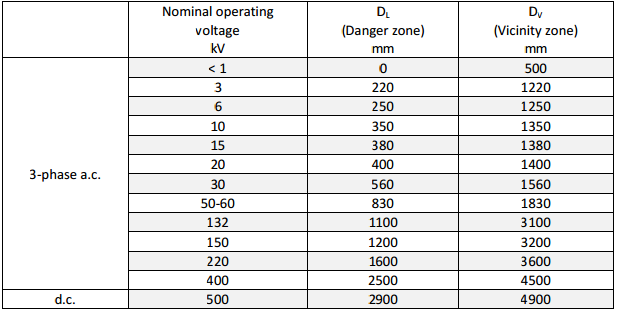
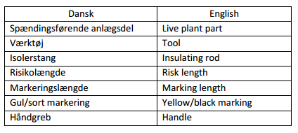

Executive Order on the safe operation of electrical plants
Pursuant to § 5 (1) (1) and § 5 (2), § 7 (3), § 29 (1) and (2), § 31 (1) and (2), § 34 (2) and § 39 of Act No. 525 of 29 April 2015 on the safety of electrical plants, electrical installations and electrical equipment (the Electricity Safety Act), the present Executive Order is hereby issued under the authority granted under § 5 (1) and (2) of Executive Order No. 545 of 29 May 2017 on the delegation of powers to the Danish Safety Technology Authority:
Scope
1 (1). This Executive Order applies to the operation of electrical plants and primary high-voltage installations.
(2) This Executive Order does not apply to the operation and servicing of electricity generating plants and storage for electricity with rated voltages up to 1000 V AC or 1500 V DC carried out in accordance with the provisions of the Executive Order on the safe design and operation of electrical installations.
Definitions
2. The following Definitions apply in this Executive Order:
1) Warning signage: Signs or flags to draw attention to parts under voltage.
2) Work: All kinds of modifications, renovations and modernisation.
3) Work near parts under voltage: Performance of a work procedure in which a person enters the proximity zone with parts of the body, with tools, equipment or devices without entering the danger zone.
4) Work on a plant under voltage: Performance of a work procedure in which a person deliberately touches parts under voltage or enters the danger zone with parts of the body, with tools, equipment or devices.
5) Work team: Two or more persons, including the team leader, who jointly perform a work procedure at a work site.
6) Temporary earthing: Earthing and short circuiting at the work site or earthing and short circuiting at transitions between cable systems and overhead line systems in cases where work is required on the cable system.
7) Work leader: Qualified person who has been appointed in writing to organise, manage and supervise compliance with the work procedure.
8) Work procedure: Overall term for dead work, work under voltage and work near parts under voltage. Also includes maintenance procedures.
9) Barrier: Protective device that provides protection against direct contact from any normal access direction. May be a fixed part of the electrical plant.
10) Protective devices: Umbrella term for screens, barriers, insulating covers and enclosures.
11) Operational activity: Activity designed to change the electrical condition of an electrical plant.
12) Operation manager: Employee of an operation management company approved by the Danish Safety Technology Authority to ensure the necessary professional skills in the operation of electrical plants.
13) Operation management company: Company that manages the operation of an electrical plant.
14) Operating procedure: Umbrella term for operational activities and function control. An operating procedure may be part of a work procedure.
15) Endpoint earthing: Earthing and shorting at a disconnector, a switch disconnector or an isolation point between a plant under voltage and a dead one.
16) Danger zone: The zone for work under voltage DL. Area around parts under voltage where the insulation level of protection against electrical hazard is insufficient when persons enter or access the area, cf. Annex 2.
17) Function control: Activity designed to check the condition of the installation and ensure that it works in accordance with technical requirements.
18) Team leader: Qualified person who has been appointed in writing to manage and supervise work at a work site.
19) Instructed person: Person instructed by a qualified person to avoid the dangers that electricity can create.
20) Instruction: Written communication from the operation manager which specifies how and by whom a given job is to be performed or who is to perform a particular function.
21) Directions: Oral or written description of how and in what function a given operating or work procedure is to be performed, or of safety-compliant behaviour.
22) Insulating cover: Temporary protective device, typically in the form of a cloth or plate of insulating material, designed to prevent persons performing work in the vicinity of uninsulated parts under voltage or parts not under voltage from accidentally entering the danger zone around these parts.
23) Earthing: Connection between earth and one or more conductors in the system.
24) Earthing point: Place where earthing and short circuiting take place.
25) Coupling manager: Qualified person who has been appointed in writing to manage the high-voltage plant's coupling and operating condition, including managing couplings in the context of work at or near high-voltage plants.
26) Coupling technician: Qualified person who has been appointed in writing to carry out couplings in high-voltage plants on the instructions of the coupling manager.
27) Quality management system for operation (KLS-D): System that contains the procedures and documentation to ensure that the electrical plant is operated in such a way as not to endanger people, livestock or property.
28) Proximity zone: Area outside the danger zone DV, cf. Annex 2.
29) Primary high-voltage installation: Installation supplied directly from a high-voltage plant.
30) Procedures: Umbrella term for operating procedures and work procedures.
31) Qualified person: Person with relevant training, knowledge and experience that enables him to analyse risks and avoid the dangers that electricity can give rise to.
32) Safety distance: Distance in air determined for work on or near a high-voltage plant under voltage in order to ensure that those who perform the task do not accidentally enter the danger zone around the uninsulated parts under voltage.
33) Safety officer: Qualified person on a work team designated by the team leader to specifically monitor compliance with the safety distance.
34) Screen: Temporary protective device, insulating or non-insulating, used to prevent access to any equipment or parts of an electrical plant where there may be an electrical hazard.
35) Station area: General name for areas containing electrical plants.
3 (1). When operating electrical plants, standard EN 50110-1: Operation of electrical installations may be applied in conjunction with this Executive Order, in which case the safety requirement of § 3 of the Electricity Safety Act is considered to be met.
(2) If standard EN 50110 is not applied, or only partially so, the owner of the electrical plant must document how the chosen solution exhibits a level of safety at least equivalent to the level of safety of standard EN 50110, in which case the safety requirement of § 3 of the Electricity Safety Act is considered to be met.
(3) Documentation, cf. (2), must be stored in the quality management system for operation, cf. Annex 1 (VI) (3).
Publication
4. Standard EN 50110 as referred to in this Executive Order is not included in the Danish Official Gazette, but can be purchased from Danish Standards or reviewed at the Danish Safety Technology Authority.
Notification of the management of operation
5 (1). The owner of the electrical plant must ensure that the operation of the installation is carried out by an operation management company which has employed an operation manager who has been approved by the Danish Safety Technology Authority, cf. § 13.
(2) The operation management company, cf. (1), must be
1) the owner of the electrical plant, if this is a company, or
2) a company with which the owner of the electrical plant has entered into an agreement.
(3) The operation manager of an operation management company that only manages the operation of a primary high-voltage installation need not be approved by the Danish Safety Technology Authority.
6 (1). The operation management company for the electrical plant must notify the Danish Safety Technology Authority, using a form on the business portal Virk.dk (www.virk.dk) or the single point of contact (www.businessindenmark.dk), that the company is the operation management company for the electrical plant, cf. § 5.
(2) The notification under paragraph (1) must make clear who the company has employed as operation manager.
7(1). Once the Danish Safety Technology Authority has received a notification as referred to in § 6, it shall send a receipt to the owner of the electrical plant stating which company is registered as the operation management company for the plant.
(2) Once the Danish Safety Technology Authority has received a notification as referred to in § 6, it shall send a receipt to the operation management company for the electrical plant stating the name of the operation manager registered in the company.
Disclosure obligation in respect of changes
8 (1). The owner of the electrical plant must inform the Danish Safety Technology Authority of the following:
1) Change of operation management company for the electrical plant.
2) Changes in ownership of the electrical plant.
(2) The obligation under paragraph 1 (2) is incumbent on both the former owner and current owner of the electrical plant.
9(1). The operation management company for the electrical plant must notify the Danish Safety Technology Authority of changes related to the operation manager's employment.
Derogation
10 (1). On application by the operation management company for the electrical plant, the Danish Safety Technology Authority may grant a derogation from the requirement to employ an operation manager, cf. § 5.
(2) Applications for a derogation must be submitted to the Danish Safety Technology Authority using a form on the business portal Virk.dk (www.virk.dk) or the single point of contact (www.businessindenmark.dk).
(3) For an application for a derogation as referred to in paragraph 1, the operation management company for the electrical plant in question must declare that the company will ensure that the tasks of the operation manager will still be carried out during the period of the derogation, cf. Annex 1 (II) (1).
(4) Derogations under paragraph 1 may be granted for a period of up to 3 months based on an overall assessment of the circumstances of the case.
(5) The Danish Safety Technology Authority may set conditions for a derogation under (1).
Qualifications
11 (1). Approval as an operation manager may be granted to the following persons:
1) Persons who have passed a final exam as an electrical engineer with relevant specialisation in electrical plants.
2) Persons who can obtain approval as a responsible professional in an authorised firm of electricians in accordance with the Executive Order on the approval of responsible professionals in electrical, sewage and sanitary installations and in the gas sector, etc., and who can document relevant practical experience in the operation of electrical plants.
3) Persons who have passed the final exam as engineer with documented relevant theoretical knowledge and practical experience with the operation of electrical plants.
4) Persons approved as a manager of operations pursuant to Section 5 of the Executive Order on heavy current.
(2) The Danish Safety Technology Authority may, in exceptional cases, waive the requirements of paragraph 1 where this is deemed to be justifiable from the point of view of electrical safety.
Application for approval
12 (1). Applications to be approved as an operation manager for electrical plants must be submitted to the Danish Safety Technology Authority using a form on the business portal Virk.dk (www.virk.dk) or the single point of contact (www.businessindenmark.dk).
(2) An application under paragraph 1 must contain the following information:
1) Full name and national identity number of the applicant.
2) Information about the applicant's address and email address.
3) Information and documentation of the applicant's qualifications, cf. § 11.
4) Information on whether the applicant has been approved as a manager of operations in accordance with Section 5 of the Executive Order on heavy current.
13 (1). Approval as an operation manager shall be issued by the Danish Safety Technology Authority when it is documented that
1) the applicant has the right qualifications to be able to perform the duties of an operation manager, cf. § 11, and
2) the applicant is an adult and is not subject to guardianship under § 5 of the Guardianship Act or curatorship under § 7 of the same Act.
(2) The applicant must make a written declaration as to whether he has been convicted during the preceding three years of infringements of the Electricity Safety Act, the previously applicable Act on heavy current electrical plants and other electrical equipment or regulations issued under these laws.
14 (1). On receipt of an application, the Danish Safety Technology Authority shall send a receipt to the applicant with information on the following:
1) the deadline for notification of the approval decision, cf. § 15;
2) that the applicant may consider the approval as notified unless the Danish Safety Technology Authority has taken a decision before the expiry of the deadline, cf. § 15 (3).
3) appeal options.
15(1). The Danish Safety Technology Authority must decide on the approval of the operation manager within 60 days of receipt of the notification and all necessary documents, cf. (2) however.
(2) The deadline referred to in paragraph 1 may be extended once, if the complexity of the case justifies this. The Danish Safety Technology Authority must, before the expiry of the time limit specified in (1), justify the extension to the applicant and indicate a new deadline for when the decision will be taken.
(3) If the Danish Safety Technology Authority has not taken a decision before the expiry of the deadlines under (1) and (2), the approval may be deemed to have been notified.
Refusal
16 (1). Even if the conditions set out in § 13 for obtaining approval as an operation manager are met, the Danish Safety Technology Authority may issue a refusal in the following cases:
1) In the circumstances referred to in § 78 (2) of the Danish Criminal Code.
2) If the applicant has been convicted abroad for matters comparable to those of § 78 (1) of the Danish Criminal Code.
3) If the applicant has otherwise conducted himself such that there is reason to believe that operation will not be properly carried out.
(2) In the event of refusal under paragraph 1 (1)-(2), § 78 (3) of the Danish Criminal Code shall apply mutatis mutandis.
Lapse
17. Approval as an operation manager shall lapse when the person in question no longer satisfies what is stipulated in § 13 (1) (2).
18 (1). The owner of the electrical plant shall
1) ensure that there is at all times an authorised operation manager in the operation management company; and
2) ensure that the operation management company has the powers necessary for the operation management company to carry out its tasks.
(2) Documentation of compliance with paragraph 1 (2) must be evident in the quality management system for operation, cf. Annex 1 (I) (2).
19 (1). The owner of the electrical plant must ensure that inquiries under the Executive Order on the safe performance of non-electrical work near electrical plants are handled by the operation management company.
(2) In the event of an inquiry in accordance with paragraph 1, the operation management company must indicate which electrical plants are located in the work area.
General
20. In order to manage the operation of an electrical plant, the operation management company must employ an operation manager who has been approved by the Danish Safety Technology Authority, cf. § 13.
21 (1). The operation management company must establish a procedure for ensuring that the duties of the operation manager are carried out in his absence.
(2) The procedure referred to in paragraph 1 must be stored in the quality management system for operation, cf. Annex 1 (II) (1).
22. The operation management company for the electrical plant must ensure that the operation manager has the powers necessary to carry out his duties.
23 (1). The operation manager must, in collaboration with the operation management company, ensure the necessary professional skills in relation to the operation management company's responsibilities in the operation of electrical plants. In this context, the operation manager must designate persons for the roles of coupling manager, coupling technician, supervisor and team leader, as well as entering into agreements with contractors, concluding interconnection agreements and granting permits to authorised firms of electricians.
(2) The following tasks may only be carried out by the operation manager:
1) Entering into agreements with contractors regarding the performance of operating and work procedures in the context of the operation, cf. § 44.
2) Entering into interconnection agreements, cf. § 30.
3) Granting permits to authorised firms of electricians, cf. § 46.
24 (1). The operation management company shall utilise the quality management system for operation provided by the owner of the electrical plant.
(2) The operation manager of the electrical plant shall ensure that the quality management system for operation is available to and used by employees of the operation management company.
25. The operation management company shall ensure that the employees involved in the operation of the electrical plant have access to relevant regulations from the Danish Safety Technology Authority and relevant standards.
The operation management company and its employees
26 (1). The operation manager of the electrical plant shall ensure that operating and work procedures in connection with the operation of the facility are properly staffed, that the employees are adequately instructed and that adequate supervision of the work is carried out.
(2) The operation management company must ensure that operating and work procedures are performed in accordance with the quality management system provided by the owner of the electrical plant.
27(1). The operation manager of the electrical plant must ensure that the employees have the necessary skills for the types of procedures performed by the operation management company and that the employees' skills are maintained.
(2) The operation management company must ensure that employees who perform operating and work procedures on or near plants under voltage are instructed in the relevant regulations as necessary.
28. The operation manager of the electrical plant must ensure that personnel who work at or near the electrical plant have undergone and refreshed a first aid course, as necessary. In addition, personnel must be instructed on how to help a person who has suffered an electrical accident without exposing themselves to danger.
29(1). The operation manager of the electrical plant must ensure that persons are appointed to the roles of coupling manager, coupling technician, supervisor and team leader to the extent necessary for the operation of the electrical plant.
(2) Appointment as referred to in paragraph 1 must be made in writing, indicating the role to be performed.
Operation of the electrical plant
30 (1). Prior to the interconnection of electrical plants where operations are not carried out by the same operation management company, the operating companies must conclude a written agreement in this regard. The agreement must contain a description of the cooperation in the boundary area of the plants and how couplings between the installations are to be agreed.
(2) The operation managers for the electrical plants shall sign the agreement referred to in paragraph 1 on behalf of the operation management companies.
31. The operation management company for a high-voltage plant shall ensure that the plant's coupling and operating conditions are monitored and checked by a coupling manager.
32. The operation management company for the electrical plant shall ensure that there is a wiring diagram of the station plant in the station space for the operation of the following plants:
1) Plants with operating voltages of 30 kV and above.
2) Plants with complex coupling systems.
3) Plants with more than two transformers.
33 (1). The operation management company for the electrical plant must ensure the drafting of
1) up-to-date documentation for the electrical plant in the event of any changes,
2) an updated circuit diagram showing the high-voltage network's coupling conditions and
3) a report showing operational faults, their nature and the timing of their occurrence and remediation.
(2) The report referred to in paragraph 1 (3) must be kept for at least one year.
34. The operation manager of the electrical plant shall ensure that the right tools, equipment and devices are available for conducting procedures in connection with the operation of the electrical plant.
35. The operation management company must ensure that the maintenance of equipment constituting all or part of the electrical plant is carried out in accordance with a defined maintenance plan or according to the manufacturer's instructions.
36 (1). The operation management company for the electrical plant must ensure that station areas are not used for purposes that are not authorised for the operation of the plant.
(2) The owner of the electrical plant may authorise use of station areas for other purposes if
1) this is based on the risk assessment of the operation manager, and
2) there is no detriment to personal safety and safety at the plant.
(3) The operation management company for the electrical plant must ensure that the placement of tools, devices and equipment in station areas only takes place
1) in accordance with § 37 and
2) in such a way that the operation of the station plant is not hindered or hampered.
37. The operation management company for the electrical plant must ensure that access roads and escape routes from station plants are kept free and easy to pass.
38(1). The operation management company for the electrical plant must promptly report all electrical accidents related to the installation to the Danish Safety Technology Authority and notify the owner of the electrical plant at the same time.
(2) The report referred to under paragraph 1 must contain all information that may be relevant for assessing the cause of the accident.
39. The operation management company must notify the owner of the electrical plant of any significant safety faults and deficiencies that could endanger persons, livestock or property.
40 (1). The operation management company for the electrical plant must ensure that any person moving on or near the electrical plant is instructed in safety-compliant behaviour and compliance with the provisions of § 43.
(2) If the operation management company for the electrical plant uses external labour to perform procedures on or near the electrical plant, the said company has the same responsibility for the safety of those persons while performing the said procedures as for the company's own employees.
(3) Paragraph 1 does not include contractors under § 44 and authorised firms of electricians under § 46.
41. The operation management company for the electrical plant must ensure that station areas and user controls are locked if there is a risk of unauthorised access.
42 (1). The operation management company for the electrical plant must ensure that access to locked station areas and locked user controls is only granted to persons with sufficient knowledge of the risks involved.
(2) Keys must be supplied against receipt from the recipient and must not be passed on to third parties without a specific agreement with the operation manager.
43 (1). When moving in station areas, protective devices placed as protection against inadvertent touching of parts under voltage in accordance with the Executive Order on the safe design of electrical plants must not be passed or removed. Load-bearing structures for the electrical plant must not be climbed upon.
(2) During the performance of procedures according to the provisions of Parts 13-19, paragraph 1 may be deviated from to the extent necessary to perform these procedures.
44 (1). The operation management company for the electrical plant may conclude a written agreement with contractors for the performance of procedures in the context of the operation of the electrical plant.
(2) In the case of any agreement as referred to in paragraph 1, the operation management company for the electrical plant must ensure that the contractor has an authorised operation manager in its employ, cf. § 13.
(3) The contract with a contractor under paragraph 1 must contain a description of the following:
1) which electrical plant the agreement covers,
2) what procedures the contractor must perform,
3) what roles the contractor can itself appoint persons to and who is responsible for such appointments.
45 (1). A contractor who has entered into an agreement as referred to in § 44 must ensure that
1) work on or near the electrical plant takes place without danger to persons, livestock or property,
2) operating and work procedures on the electrical plant are planned, cf. § 47,
3) the contractor's employees and subcontractors' employees receive sufficient directions,
4) the procedures are conducted in accordance with the provisions of this Executive Order and
5) the quality management system provided by the owner of the electrical plant is followed.
(2) A contractor who has entered into an agreement as referred to in § 44 may subcontract procedures under the contract. The responsibility for the performance of procedures forming part of the operation of the electrical plant remains with the contractor.
46 (1). The operation management company for the electrical plant may allow authorised firms of electricians to perform the following procedures:
1) procedures performed at the point of supply where the low-voltage electrical installation is connected to the electrical plant;
2) fitting and replacement of cable fuses.
(2) When an authorised firm of electricians carries out procedures according to paragraph 1, there is no requirement for an operation manager employed by the authorised firm of electricians.
(3) When carrying out procedures according to paragraph 1, the authorised firm of electricians is responsible for its own employees.
Risk assessment and planning of operating and work procedures
47 (1). Before any operating and work procedure is commenced, a qualified person must plan the performance of the procedure and assess the electrical risks associated with its performance.
(2) In the context of the said planning and on the basis of the risk assessment under paragraph 1, consideration must be given to the following:
1) The scope of the procedure and the delimitation of the work site.
2) The selection of working method.
3) The selection of tools and other equipment.
4) The selection of protective devices and personal protective equipment.
5) The selection and instruction of the persons to perform the operating or work procedure.
6) The evaluation of remedial options in the event of an accident.
(3) The planning and risk assessment of work procedures must be performed by a supervisor.
Communication
48 (1). Any message between the coupling manager, coupling technician, supervisor and the team leader must include the name of the person sending the message.
(2) If the message is oral, it must be repeated by the recipient and the sender must confirm that the message has been correctly understood.
49. The commencement of work or coupling after the completion of work must not take place on the basis of pre-agreed time periods.
Work site
50. A work site must be well defined and clearly marked. There must be sufficient space, access and lighting in all places where operating and work procedures are to be performed. Where necessary, access to the work site must be clearly marked.
51. Flammable materials and objects that could prevent passage should not be placed near or in access and escape routes to and from the coupling plant and at the operating points for the coupling plant. Flammable materials must be kept away from sources for arcs.
52. In the case of overhead line systems, an assessment of the mechanical condition of the electrical plant and the type and scope of the operating and work procedure must be made against the risk of accidents that may arise as a result of the mechanical effects that the electrical plant may be exposed to during performance of the procedure.
Tools, equipment and devices
53 (1). Tools, equipment and devices used in the operation of the electrical plant must
1) be suitable for the purpose for which they are used so that the procedure can be performed without endangering people;
2) be used correctly and in accordance with the manufacturer's or supplier's instructions;
3) be inspected at appropriate intervals or according to the manufacturer's instructions; and
4) be maintained in such a way as to be suitable for continued use.
(2) For any tool that includes an insulating rod, a risk length and marking length must be specified. The marking length must be indicated by yellow/black marking on the insulating rod, see Annex 3, Figure 1.
54. User guidance for tools, equipment and devices that have safety significance must be in Danish unless the language knowledge of the employees dictates otherwise.
55. Before any operating and work procedures are commenced, it must be ensured that sufficient tools, equipment and devices are available and that these are without visible faults.
56. Procedures on or near electrical plants under voltage must be performed by persons over 18 years of age.
57. Procedures on or near electrical plants must, unless otherwise specified, be carried out by qualified persons or by instructed persons under the supervision or monitoring of qualified persons.
58 (1). Before commencing any work procedure, directions must be given to the persons who are to perform the work.
(2) Before the directions, it must be assessed whether the complexity of the work requires supplementary written directions.
59. In order to ensure that work procedures on high-voltage plants are carried out properly, the supervisor must
1) ensure that the persons performing the work receive sufficient directions before the work procedure commences and
2) provide the necessary supervision at the work site during the performance of the work.
60. Where an unforeseen situation occurs during the performance of a procedure on or near electrical plants, the work must be suspended until clearance to re-commence work is granted by the team leader or the qualified person in charge of the procedure at the work site.
Coupling
61. On decoupling in order to render plants parts dead, disconnectors, switch disconnectors or isolation points must be used that provide a level of insulation corresponding to the type and nature of the plant throughout the area separated.
62. Coupling of low-voltage electrical plants must be managed or carried out by a qualified person.
63. Coupling of high-voltage electrical plants must be carried out as a collaboration between a coupling manager and a coupling technician.
64 (1). Transportable rods for coupling high-voltage control devices located in or just outside the danger zone must comply with the requirements referred to in § 53.
(2) The coupling must be carried out by a coupling technician whilst complying with a safety distance established for him/her.
Measurement
65. Measurements on high-voltage plants must be carried out by a qualified person and must be performed in accordance with the provisions on work procedures for low-voltage and high-voltage plants under voltage, cf. Parts 13 and 16-18 or the work procedures for work near parts under voltage, cf. Parts 13, 16, 17 and 19 if there is a risk of penetrating the danger zone or proximity zone.
Inspection
66 (1). When inspecting enclosed plants under voltage, a qualified person may open doors, hatches or inspection covers in the installation provided this is done in compliance with a specified safety distance.
(2) Inspection that requires disassembly of fixed enclosures must be carried out in accordance with the provisions on work procedures for low-voltage and high-voltage plants under voltage, cf. Parts 13 and 16-18.
67(1). Work procedures must be managed or performed by a team leader.
(2) Work procedures for dead low-voltage plants are not subject to paragraph 1.
68 (1). Work procedures for high-voltage plants must only be undertaken by a supervisor.
(2) Work procedures for high-voltage plants may be undertaken in accordance with established instructions in the case of routine procedures that are often repeated on the same type of plant.
69 (1). Work procedures on or near dead low-voltage plants must be managed or performed at the work site by a qualified person.
(2) Clearance to commence the work procedure must be given by a qualified person.
(3) The go-ahead for energisation after the completion of work must be given by a qualified person.
70. When working on dead plants, the following safety measures must be put in place:
1) Full disconnection.
2) Prevention of re-connection.
3) Checking that the system is dead.
4) Earthing and short circuiting where there is a risk that the plant could come under voltage.
5) Protection against any potentially live parts nearby.
71. After performing work on dead low-voltage plants, all persons involved in the work must be informed that
1) the work has been completed;
2) safety measures and protective devices put in place are being inactivated; and
3) the plant must now be regarded as under voltage.
General
72 (1). Work procedures on or near dead high-voltage plants must be carried out in cooperation with a coupling manager.
(2) Operational activities not performed by the coupling manager must be performed by a coupling technician on the instructions of a coupling manager.
(3) The coupling manager must know who the team leader is during the work procedure and how to contact him.
73 (1). Work procedures on or near dead high-voltage plants must be managed or performed at the work site by a team leader.
(2) The team leader must know who the coupling manager is during the procedure and how to contact him.
The coupling manager
74. Before the work procedure commences, the coupling manager must ensure that safety measures are put in place, cf. § 75. Until safety measures are put in place, the electrical plant is considered to be under voltage.
75. When working on dead high-voltage plants, the following safety measures must be put in place:
1) Full disconnection.
2) Checking that the system is disconnected.
3) Prevention of re-connection.
4) Checking that the system is dead before endpoint earthing.
5) Establishment of endpoint earthing.
6) Checking that endpoint earthing has been completed.
7) Update of the coupling diagram.
8) Go-ahead to the team leader.
76 (1). During the performance of the work procedure the coupling manager must ensure that
1) the connection equipment used for disconnection is protected from unintentional connection;
2) signage warning that connection is prohibited is not removed before work is completed; and
3) any endpoint earthings that are established will be maintained throughout the work.
(2) During measuring or testing, paragraph 1 (3) may be waived.
(3) When connecting or disconnecting measuring and testing equipment, paragraph 1 (3) may be waived where the relevant plant part has been earthed and shorted immediately prior to the connection of the equipment.
The team leader
77 (1). Before work commences, the team leader must ensure that safety measures are put in place, cf. § 78.
(2) The work must not commence until there is a go-ahead from the coupling manager.
78. The team leader must ensure that
1) a check is made that the system is dead before temporary earthing is implemented;
2) temporary earthing is put in place;
3) it is checked that temporary earthing is in place; and
4) there is adequate provision of protective devices or warning signage, cf. §§ 103-109, to prevent plants parts under voltage from being wrongly perceived as dead.
79. The team leader must not let work commence until all members of the work team at the work site have received the necessary directions in respect of
1) the scope of the procedure;
2) the boundaries of the work site;
3) plant parts under voltage near the work site;
4) the performance of the work; and
5) the safety measures and protective devices put in place.
80 (1). During the performance of the work, the team leader must ensure that
1) the safety measures and protective devices put in place are maintained as long as the work continues; and that
2) temporary earthings put in place pursuant to § 81 are maintained throughout the work.
(2) During measuring or testing, paragraph 1 (2) may be waived.
(3) When measuring and testing equipment is being connected or disconnected, paragraph 1 (2) may be waived where the plant part concerned has been earthed and shorted immediately prior to the connection of the equipment.
Earthing and short circuiting
81 (1). Temporary earthing must be carried out to the extent required by §§ 82-89.
(2) Prior to the temporary earthing of a plant part as referred to in paragraph 1, it must be checked that the plant part is dead at the earthing point. The check must be performed on the cable(s) to be earthed and shorted.
(3) Fixed earthing terminals may be connected without prior testing of the voltage at the earthing terminal if this can take place without risk to people.
(4) The team leader must check that the required temporary earthing is deployed.
82 (1). In overhead line systems, open station plants and enclosed plants opened in order to carry out work, temporary earthing is required, cf. paragraph 2 and §§ 83 and 85 however.
(2) Endpoint earthing may be regarded as temporary earthing if it is located sufficiently close to the work site that § 88 is satisfied.
83. In the case of work procedures near overhead lines, it is permitted to omit temporary earthing if
1) the overhead line is endpoint earthed and
2) a distance of at least 1 metre from the cable is maintained during the work.
84. For operating procedures on AC overhead lines with operating voltages above 60 kV, temporary earthing is only required on the phase(s) on which work is to be done, provided that
1) endpoint earthing has been put in place;
2) warning signage has been put in place on those phases in the work site not earthed; and
3) there is no risk that the persons performing the work will come within 1 metre of the phases at the work site that are not earthed with any part of the body, tool, equipment or device.
85. If temporary earthing is not planned for the plant's whole earthing and shorting current, endpoint earthing is also required.
86 (1). Before performing work in cable systems, endpoint earthing must be performed.
(2) In addition, if the cable system is connected to sections of the overhead line system, temporary earthing must be established at transitions between the cable system and the sections of overhead line.
87 (1). The earthing points must be chosen so that no fuses or circuit-breakers between them and the work site are included.
(2) If there are disconnectors between the earthing points and the work site, they must be locked in the closed position.
(3) Earthing can be implemented by means of circuit-breakers in factory-ready plants designed for this purpose, provided the circuit-breaker is locked, so that neither electrical nor mechanical disconnection can occur.
88 (1). Temporary earthing must be located such that it is visible from the work site, cf. paragraphs 2 and 3 however.
(2) Temporary earthing for a machine or transformer and associated coupling installation may be located in the coupling installation, provided that the machine or transformer and the coupling installation are sufficiently clearly signed to eliminate the possibility of mistaking them.
(3) In the station space, temporary earthing may be located on the other side of a wall or floor structure if it is not possible to implement the temporary earthing at the work site.
89 (1). Earthing and shorting must be performed on both sides of the isolation point before isolation is undertaken, if
1) cables are to be isolated during the work, or
2) the work is to take place on both sides of the isolation point.
(2) For cable work, earthing and shorting may be performed at the cable end sockets.
Coupling dead high-voltage plants
90 (1). Safety measures and protective devices put in place must not be inactivated or removed before the team leader has notified all those involved in the work that these are being inactivated and that the plant part that has been dead during the work must now be regarded as under voltage.
(2) If it is not possible for the team leader to notify everyone who has been involved in the work in accordance with paragraph 1, it must be otherwise ensured that there is no danger to people.
91. After performing work on dead electrical plants, all persons who have been involved in the work must be informed that
1) the work has been completed;
2) the safety measures and protective devices put in place are being inactivated; and
3) the plant must now be regarded as under voltage.
92. Before the go-ahead is given to connect the plant part, the team leader must ensure that
1) the safety measures and protective devices put in place are removed;
2) tools, devices and unauthorised equipment have been removed from the plant part; and
3) the plant's barriers and enclosures have been restored.
93. Coupling must not take place until the coupling manager has
1) received a go-ahead from the team leader and
2) ensured that all protective devices put in place have been removed.
94. After the work has been carried out, the coupling manager must ensure that the wiring diagram is updated in accordance with the electrical plant's current coupling conditions.
General
95. Work procedures for work at or near low-voltage plants under voltage must be performed exclusively on the basis of a risk assessment and by a qualified person with specific knowledge and experience of work on low-voltage plants under voltage.
96 (1). Work procedures for work at or near low-voltage plants under voltage must be carried out by at least two qualified persons, cf. § 98 (2) however, one of whom is the team leader and must manage the work procedure.
(2) Persons undergoing training in working at or near low-voltage plants under voltage may perform work on or near low-voltage plants under voltage under the supervision of a qualified person.
97 (1). Work on overhead lines must be performed by a work team consisting of the team leader and at least one other person. Both must be present at the work site throughout the work.
(2) Work overhead lines from a basket wagon may be carried out by one person provided another person is present throughout the work.
(3) If the person performing the work as referred to in 2 is not a qualified person, he must be instructed in the risks of, remedial options in the event of, an accident caused by the work.
98 (1). Work on or near cables, cable cabinets, panels and similar under voltage may be performed by one person, the team leader, where another person is located sufficiently close to the work site that he can rapidly intervene in the event of an accident.
(2) If the person who is near the work site in accordance with paragraph 1 is not a qualified person, he must be instructed on handling any accident.
(3) Subject to a risk assessment, the work in accordance with paragraph 1 may be performed by one person, the team leader, provided the work procedure is uncomplicated and there is no increased risk for the person in question.
The team leader
99. Before work commences, the team leader must ensure that measures are taken to ensure that
1) shorting or earthing is not caused by tools or equipment, and
2) no person comes into direct contact with parts under voltage.
100. Before the work begins, the team leader must instruct the work team on
1) the scope of the procedure;
2) the boundaries of the work site;
3) plant parts under voltage at or near the work site;
4) earthed plant parts under voltage at or near the work site;
5) how the work is to be performed; and
6) protective devices under §§ 105-106 and §§ 108-109.
101. During the work procedure, the team leader must supervise and ensure that
1) the directions are followed;
2) the protective devices put in place are maintained; and
3) the work is interrupted if circumstances occur during the work which so require.
102. After performing work at or near low-voltage plants under voltage, all tools, equipment and devices must be removed and all persons involved in the work informed that
1) the work has been completed; and
2) the safety measures and protective devices put in place are to be inactivated.
103 (1). To ensure that no person accidentally enters the danger zone, the following safety measures must be put in place for work at or near high-voltage plants under voltage, cf. § 129 however:
1) establishment of the safety distance;
2) implementation of screens, barriers or insulating covers;
3) putting up warning signage.
(2) Safety measures as referred to under paragraph 1 must be fixed and assigned by the supervisor or in an instruction.
104 (1). The safety distance for work on or near a high-voltage plant under voltage is calculated from the plant's uninsulated parts under voltage and is determined by providing a suitable addition to the distance DL according to the nature, duration and complexity of the procedure.
(2) The safety distance must be determined by the supervisor in the context of the risk assessment, cf. § 47.
105 (1). Screens and barriers positioned within the specified safety distance from uninsulated plant parts under voltage must consist of sheets of insulating material with electrical and mechanical properties so as to provide, by themselves, sufficient safety for the voltages that could arise across the plant part.
(2) Screens and barriers as referred to in paragraph 1 must be able to be erected and taken down without compromising the safety distance with any part of the body.
106 (1). Warning signage must be effected by means of signage consisting of
1) warning signs with zigzags in accordance with the Executive Order on safety signage and other forms of warning; or
2) a yellow flag with appropriate marking.
(2) Warning signage must not be applied closer to uninsulated plant parts under voltage than the distance DV or the specified safety distance, cf. paragraph 3 however.
(3) Before work on or near dead high-voltage plants, it is permitted to place warning signage directly on or close to the parts maintained under voltage if this is necessary for the signage to be effective, provided that
1) warning signs made of insulating material are used;
2) the signs are put up with a suitable insulating rod that satisfies the provisions for tools and devices under §§ 53-55; and
3) the safety distance is not compromised with any part of the body during the erection and removal of the signs.
107. The work site must be marked with
1) suspended yellow/black tape or
2) screens or barriers bearing warning signage.
108 (1). The team leader must appoint a safety officer before setting up and removing warning signage and implementing and removing protective devices. During the performance of the work procedure, the safety officer must monitor the person who performs the work and warn him if the safety distance is at risk of being compromised, cf. paragraph 3 however.
(2) The safety officer must not participate in the performance of the work himself and may supervise a maximum of two persons provided they are working together to perform the work and are located in close proximity to each other.
(3) For work procedures for electrical plants where parts under voltage are fully shielded using accessories that are built-in or were supplied with the plant in accordance with the supplier's operating instructions, there is no need for a safety officer.
109 (1). When erecting and removing warning signage and implementing and removing protective devices near dead high-voltage plants, Parts 13 and 15 shall apply.
(2) When erecting and removing warning signage and implementing and removing protective devices near high-voltage plants under voltage, Parts 13 and 18 shall apply.
General
110. Work procedures for high-voltage plants under voltage must be performed exclusively on the basis of a risk assessment and by qualified persons with specific knowledge and experience of working on high-voltage plants under voltage.
111 (1). Work procedures for high-voltage plants under voltage must be carried out in collaboration with a coupling manager.
(2) The coupling manager must know who the team leader is and how to contact him.
112 (1). Work procedures for high-voltage plants under voltage must be managed by a team leader at the work site, who must be present throughout the work procedure.
(2) The team leader must know who the coupling manager is and how to contact him.
113 (1). Work procedures for high-voltage plants under voltage must be carried out by at least two persons, including the team leader. The team leader and at least one other person must be present throughout the work.
(2) Based on the risk assessment, the operation manager may, by means of an instruction, permit work to be performed by a single person, provided the work or operating procedure is uncomplicated and there is no increased risk for the person in question.
Working methods
114 (1). Work procedures for high-voltage plants under voltage must be performed according to the insulating rod method, where the introduction of tools and equipment into the danger zone around plant parts under voltage takes place using suitable insulating rods.
(2) Other recognised working methods, cf. EN 50110, may be used as an alternative to the insulating rod method referred to in paragraph 1.
115 (1). If the risk assessment indicates that it is necessary for carrying out a work procedure, a safety officer must be appointed.
(2) The safety officer may be the team leader and may participate in the work to the extent that this is compatible with his ability to monitor those who are performing the work and warn them if the safety distance is being compromised.
Working conditions
116 (1). A work procedure for high-voltage plants under voltage must be performed according to written working directions.
(2) Working directions under (1) must be adapted to the nature of the work and must be provided to each member of the work team.
(3) Working directions under (1) may either be prepared for a single work activity or be generally applicable to work activities of the same nature.
The coupling manager
117 (1). Before a go-ahead is given, the coupling manager must ensure that
1) the plant protection is in operation and is set so that faults within the work site are rapidly disconnected;
2) automatic reconnection equipment is deactivated;
3) user controls are not connected while work is being performed; and
4) the plant does not have any earth faults, cf. § 118 (2).
(2) For work procedures for high-voltage plants with a maximum operating voltage of up to and including 24 kV, paragraph 1 (2) may be waived if
1) the work is short in duration, or
2) the work is performed with an increased safety distance and a longer marking length in accordance with the risk assessment.
The team leader
118 (1). Before the work procedure commences, the team leader must ensure that
1) the work can be performed according to the working directions;
2) the members of the work team have the necessary training and experience in the work they are required to perform;
3) the members of the work team are carefully instructed as to which tools and devices are to be used;
4) detected defects are remedied;
5) poles and structural parts are marked, in accordance with the working directions, with the safety distances laid down for the work procedure; and
6) work does not commence with any earth fault on the plant, cf. paragraph 2 however.
(2) Coupling and decoupling may be commenced after checking for earth faults on plants with a maximum operating voltage of 24 kV irrespective of paragraph 1 (6).
119. Before work commences, the team leader must provide the necessary directions to the members of the work team on
1) the scope of the work procedure;
2) the boundaries of the work site; and
3) the contents of the working directions.
120. Before work commences, the team leader must check that
1) tools and devices are in accordance with the working directions;
2) plant parts that may cause accidents during work are free of visible defects;
3) non-earthed metal parts that are not plant parts normally under voltage and which it is possible to touch during work are dead; and
4) there is satisfactory communication with the coupling manager at the work site.
121. The members of the work team must not start work until the team leader has cleared this.
122. During the performance of the work procedure, the team leader must ensure that
1) the working directions are followed; and
2) the distance between the phases and between phases and earth and other objects is not reduced to the extent that it could constitute a hazard.
123 (1). The members of the work team must, in the performance of the work,
1) follow the team leader's directions;
2) comply with the stated safety distances; and
3) stop work if an unexpected situation occurs.
(2) If the work is stopped in accordance with paragraph 1 (3), the members of the work team must inform the team leader and wait for clearance from the team leader before re-commencing work.
124. After the work has been completed, the team leader must
1) ensure that tools, equipment and devices have been removed from the plant;
2) investigate whether tools, equipment and devices have been damaged during the work;
3) check whether the plant has been damaged during the work; and
4) inform all persons who have been involved in the work procedure that the work has been completed and that the safety measures and protective devices put in place are to be inactivated.
125. During the work procedure, at least two persons, including the team leader, must be present at all times.
126 (1). Work near high-voltage parts under voltage must be carried out by qualified persons.
(2) The work itself can be performed by instructed persons under the supervision or monitoring of the team leader based on the risk assessment. However, this does not apply to short-term service work near high-voltage parts under voltage, cf. §§ 129-132.
127 (1). After the performance of the work, protective devices that have been put in place must be removed, cf. paragraph 2 however.
(2) Protective devices put in place must first be removed once the team leader has
1) ensured that tools, devices and unauthorised equipment have been removed from the plant part; and
2) notified everyone who participated in the work procedure that the protective devices are to be removed.
(3) If it is not possible to comply with paragraph 2 (2), it must be otherwise ensured that no hazard arises.
128. The following work procedures are not subject to the requirements of §§ 67-68 and §§ 125-127, even though the work is carried out in the proximity zone around parts under voltage:
1) work which may be carried out in accordance with § 43 (1);
2) work in plants where parts under voltage can be fully shielded prior to the work using accessories that are built-in or were supplied with the plant in accordance with the supplier's operating instructions for the plant;
3) working with or driving high-level machinery where compliance with a sufficient safety distance is ensured by means of equipment blocking off the machinery's area of movement or signage gantries on its transport routes.
Short-term service work near high-voltage parts under voltage
129. Where putting protective devices in place involves a relatively high risk, the following types of short-term service work may be carried out on the basis of a risk assessment without any safety measures other than compliance with a specified safety distance, cf. § 84 however:
1) resetting and adjustment of devices intended for this purpose;
2) checking the liquid level and insulating gases and replenishing these.
130. Before the work procedure commences, the team leader must instruct everyone on the work team on
1) the scope of the work procedure;
2) the plant parts under voltage near the work site;
3) the performance of the work; and
4) the specified safety distances.
131 (1). If the risk assessment so requires, the team leader must designate a safety officer who monitors the person performing the work during the performance of the work procedure and warns the latter if the safety distance is at risk of being compromised.
(2) The safety officer must not be allowed to participate in the work and may only supervise two persons where they are working together to perform the work and are located in close proximity to each other.
(3) The team leader may himself be a safety officer as referred to in paragraph 1.
132. After completion of the work, the team leader must ensure that
1) tools, devices and unauthorised equipment have been removed from the plant; and
2) the plant has been reconnected.
133 (1). The owner of the electrical plant must ensure that the plant complies with the provisions on the design of electrical plants that were in effect at the time of its construction or the date of any subsequent redesigns.
(2) Overhead line systems of more than 40 kV that were put in place prior to 1 July 1980 must, paragraph 1 notwithstanding, comply with the Executive Order on the safe design of electrical plants at high-level over land and at maximum cable temperature.
134. The owner of the electrical plant must ensure that the transition resistance to earth complies with the requirements for the efficiency of the earthing arrangement that were in force at the time of installation.
135. The owner of the electrical plant must ensure that the plant is inspected at appropriate intervals, tailored to the operating conditions of the individual plant.
136. The owner of the electrical plant must ensure that overhead lines are inspected at appropriate intervals so as not to endanger persons, livestock or property.
137 (1). The owner of the electrical plant must ensure that the connections of the earthing arrangement are checked at appropriate intervals and that the efficiency of the earthing arrangement is maintained.
(2) In cases where there has been a flashovers to earthed parts, the earthing arrangement must also be checked to the extent necessary.
(3) A report must be produced on the results of the inspection of the earthing arrangement and any measurements of transition resistance. This report is to be archived in the quality management system for operation and must be retained until a new report is compiled, cf. Annex 1 (VI) (7).
138 (1). The owner of the electrical plant must establish a quality management system for operation and make it available to the operation management company, cf. paragraphs 2-3 however.
(2) Owners of power generation plants with a rated output of less than or equal to 8 MW and with voltage levels above 1000 V AC or 1500 V DC are exempt from the requirement under paragraph 1 where the operation management of the plant is carried out by an operation management company that has established a quality management system.
(3) Owners of primary high-voltage installations are excluded from the requirement under paragraph 1 if the operation management of the plant is carried out by an operation management company that has established a quality management system.
139. The quality management system for operation must be adapted to the electrical plant, the procedures performed in connection with the operation of the plant and the company's organisational structure.
140 (1). The quality management system for operation must contain the elements described in Annex 1, but only those parts of point III that are relevant to the type of plant in question and to the operating and work procedures performed at the plant.
(2) The operation management company may provide instructions, procedures, descriptions and other material for the quality management system for operation.
141 (1). The quality management system for operation must be documented in paper form or in an electronic quality system and must contain all relevant and up-to-date documents in a systematic and transparent form.
(2) The owner of the electrical plant must ensure traceability for documents included in the quality management system.
142. The owner of the electrical plant must ensure that
1) the quality management system for operation is available to all users of the system;
2) changes in documents are communicated rapidly and efficiently to users of the quality management system for operation; and
3) the quality management system for operation is implemented in the operation management company and is used and updated on an ongoing basis.
143 (1). The owner of the electrical plant must keep the quality management system for operation in a satisfactory manner.
(2) Electronic storage must be effected in a manner that allows for the removal of relevant parts of the system throughout the storage period.
(3) The quality management system for operation must be made available to the Danish Safety Technology Authority on request.
144 (1). The owner of the electrical plant must ensure that an internal audit is conducted to test the effectiveness and implementation of the quality management system for operation.
(2). The internal audit must be conducted in accordance with recognised international standards for quality management systems or at least once a year on the basis of an internal audit plan.
(3) Internal audits must be carried out by auditors who are not themselves involved in the operation of the electrical plant and who have both theoretical and practical experience with internal audits.
(4) The owner of the electrical plant must ensure that an audit report is prepared based on the internal audit. The audit report must describe deviations found, suggested improvements and other comments on the quality management system for operation and must be documented in the quality management system for operation, cf. Annex 1 (VI) (8).
145 (1). The owner of the electrical plant must ensure that the quality management system is evaluated in accordance with recognised international standards for quality management systems or at least once a year.
(2) Evaluation must also take place in the event of accidents and incidents of a safety-related nature.
146 (1). The owner of the electrical plant must ensure that necessary corrective action is taken to counter deviations so that they do not occur again.
(2) The implementation of corrective action must be communicated to users of the quality management system.
147. The owner of the electrical plant must ensure that necessary preventive action is taken if safety flaws and deficiencies are identified.
148 (1). Unless a more severe penalty is incurred under some other legislation, a fine will be imposed on anyone who
1) fails to create documentation, cf. § 3 (2);
2) infringes §§ 5, 6, 8 and 9;
3) disregards conditions laid down in accordance with § 10 (5); or
4) infringes § 18 (1), §§ 19-39, § 40 (1), §§ 41-43, § 44 (2)-(3), § 45, §§ 47-95, § 96 (1), §§ 97-107, § 108 (1)-(2), §§ 109-113, § 114 (1), § 115, § 116 (1)-(2), § 117, § 118 (1), §§ 119-127, §§ 129-130, § 131 (1)-(2), §§ 132-137, § 138 (1), § 139, § 140 (1) and §§ 141-147.
(2) Companies (legal persons), etc. maybe subject to criminal liability according to the rules of Part 5 of the Danish Criminal Code.
149. The limitation period for criminal liability is 10 years.
150 (1). This Executive Order shall enter into force on 1 January 2018.
(2) Executive Order 1306 of 28 November 2017 on the safe operation of electrical plants is hereby revoked.
151. Cooperation agreements and contractor agreements made under Executive Order 1113 of 18 August 2016 on the safe operation of electrical plants shall remain valid until new agreements are made, cf. §§ 30 and 44 of this Executive Order. However, such agreements must be amended by 31 December 2019 at the latest.
152. Cooperation agreements drawn up in accordance with Section 5 (4.5.4) of the Executive Order on heavy current and contractor agreements drawn up in accordance with Section 5 (4.6.3) of the Executive Order on heavy current shall continue to be valid until new agreements are concluded, cf. §§ 30 and 44 of this Executive Order. However, such agreements must be amended by 31 December 2019 at the latest.
153 (1). Approvals of notified managers of operations issued by the Danish Safety Technology Authority before 1 July 2017 shall remain valid until they expire or are revoked.
(2) Managers of operations approved by the Danish Safety Technology Authority before 1 July 2017 must comply with the obligations imposed by this Executive Order on the operation management company and the operation manager.
The owner of the electrical plant is responsible for the establishment, use, maintenance and testing of the quality management system for operation.The quality management system for operation is intended to ensure that the electrical plant is properly operated in such a way as not to endanger persons, livestock or property, cf. § 3 of the Electricity Safety Act.
I - Information about the company
The owner of the electrical plant must indicate and describe in the quality management system for operation:
1) The electrical plant's data - including Central Business Register (CVR) information if the owner of the electrical plant is registered in the CVR, and a unique identification of the electrical plant.
2) A description of the operation management company's tasks and powers.
II - Employee competencies
The owner of the electrical plant must ensure that the quality management system for operation describes and stores:
1) The operation management company's procedure for ensuring that the duties of the operation manager are carried out in his absence.;
2) An overview of competencies for the employees who perform operating and work procedures in connection with the operation of the electrical plant and a plan for maintaining employee competencies.
3) Documentation of employees' relevant training and courses.
4) The procedure for staffing the tasks and appointing persons to the roles of coupling manager, coupling technician, supervisor and team leader.
III - Procedures for carrying out work
The owner of the electrical plant must ensure that the quality management system for operation has procedures for:
1) directions for the employees and supervision and monitoring of the performance of work procedures for the operation of the electrical plant;
2) the planning and implementation of work, couplings within and interconnection of electrical plants;
3) the preparation of instructions for work on dead low-voltage plants, low-voltage plants under voltage and near low-voltage plants under voltage;
4) the preparation of instructions for work on dead high-voltage plants, high-voltage plants under voltage and near high-voltage plants under voltage.
IV - Procedures relating to the quality management system for operation
The owner of the electrical plant must ensure that the quality management system for operation has procedures for:
1) the implementation of preventive action, internal audits, internal evaluation of the quality management system for operation, handling of deviations and the implementation of corrective action;
2) corrective action and follow-ups performed on the basis of the Danish Safety Technology Authority's inspection reports;
3) document management that ensures traceability;
4) the operation management company's access to the quality management system for operation.
V - Other procedures
The owner of the electrical plant must ensure that the quality management system for operation has procedures for:
1) directions for the safety-compliant behaviour of all persons in the electrical plant;
2) inspection and maintenance of the electrical plant;
3) the handling of inquiries under the Executive Order on the safe performance of non-electrical work near electrical plants.
VI - Additional documentation
The following documentation must also be contained in the quality management system for operation:
1) a copy of any agreement entered into with an operation management company regarding the operation of the electrical plant;
2) the Danish Safety Technology Authority's acknowledgement of receipt for registration of the operation management company for the electrical plant;
3) documentation of at an least equivalent level of safety as the standard in the case of full or partial deviation from EN 50110;
4) a copy of any written instructions supplied to personnel;
5) documentation of the directions for safety-compliant behaviour when moving around the electrical plant;
6) an overview of access permissions to the electrical plant granted;
7) documentation of the inspection and maintenance of:
a) the electrical plant
b) tools, equipment and devices;
8) internal audit reports, a copy of the internal evaluation of the quality management system for operation and the Danish Safety Technology Authority's inspection reports.
The distance DL (danger zone)
This distance indicates the outer boundary of the danger zone.
The distance depends on the operating voltage and is calculated in air from any insufficiently insulated part under voltage of the electrical plant.
The size of the distance DL at the various operating voltages is shown in the table in Figure 1.
At voltages other than those given in the table, DL can be determined by linear interpolation.
The distances DV (proximity zone)
This distance indicates the outer boundary of the proximity zone.
The distance depends on the operating voltage and is calculated in air from any insufficiently insulated part under voltage of the electrical plant.
The area between the distance DV and the distance DL from a part under voltage of a plant is known as the proximity zone.
Figure 1 Table of DL and DV distances.

Since there are no calculation methods for DC systems, the values for the DL and DV distance for AC systems are also used for DC systems below 500 kV.
At low voltage, DV is set to 500 mm. At high voltage, DV is set to DL + 1000 mm if the rated operating voltage does not exceed 60 kV, and to DL + 2000 mm if the rated operating voltage exceeds 60 kV, see the table in Figure 1.

